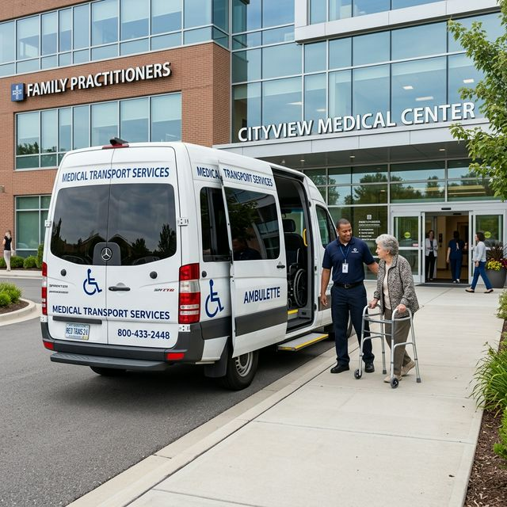
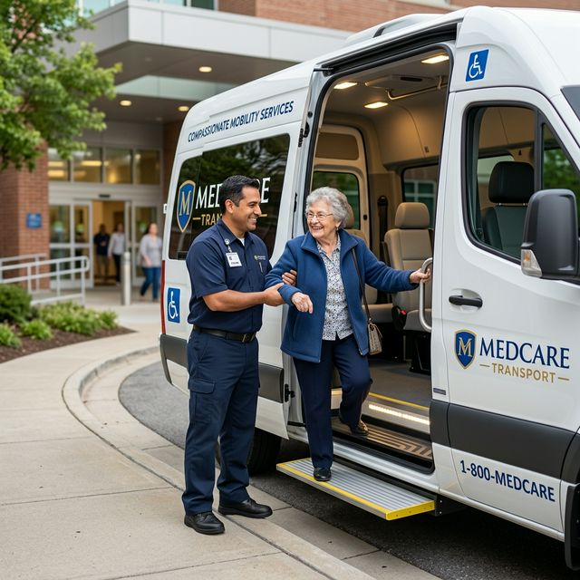

Chemotherapy & Targeted Infusions
Our light-filled chemotherapy infusion suites are thoughtfully designed to maximize your physical comfort and emotional calm. Equipped with heated ergonomic recliners, personal entertainment tablets, and panoramic garden views, each session is administered by Oncology Certified Nurses (OCN) with physician oversight.

Precision Radiation Coordination
We provide seamless coordination with premier regional radiation oncology facilities, ensuring flawless alignment between medical oncology and radiation therapies. Our radiation coordinators guide you through 4D CT simulations, treatment mapping, and daily session logistics with minimal disruption.

Comprehensive Survivorship Support
Completing active treatment is a major milestone, yet the physical and emotional transition into survivorship brings unique needs. Our Survivorship Care Program provides personalized follow-up care plans, health surveillance schedules, and rehabilitative therapy to help you thrive beyond cancer.

Immunotherapy & Precision Oncology
By analyzing the molecular DNA and RNA blueprint of your tumor, we deploy state-of-the-art immunotherapies and targeted biologics that train your immune system to detect and eradicate cancer cells with minimal impact on healthy tissues.

Integrative Palliative & Supportive Care
Palliative oncology focuses on relieving symptoms, pain, and stress at any stage of illness alongside curative therapies. Our multidisciplinary care team addresses neuropathy, sleep disruption, anxiety, and fatigue through both medical management and holistic evidence-based modalities.
